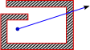

Mesh in/out labelling is an essential part in many mesh processing algorithms, like boolean and re-meshing,
The following blog post presents a method for in/out labelling of points that is fast, robust, easy to implement and paralleziable.
We start with a definition of the problem, and from that definition we derive a series of algorithms each one addresses the issues of the ones before it, until we arrive at the final solution, which is fast and robust against difficulties like holes, non-manifoldness and self-inclusion, the method also does not depend on mesh normals, and can be accelerated on GPUs or multithreaded CPUs for executing on many query points against millions of polygons.
While there are existing solutions for this problem like winding numbers, its derivations/approximations and Signed Distance Field computation to name a few, the method described here is easier to implement and does not depend on mesh normals.
C++ code is provided at the end.
Given a triangle soup and a point, determine if the point is enclosed by the volume bounded by the triangle soup.
We define a point that is enclosed by the volume bounded by triangle soup as: a point which is not visible from any possible view direction, we will see in a minute that our definition will implicitly change as we improve upon the first algorithm.
From the previous definition, we can derive the first version of the algorithm:
def is_inside(mesh, point):
for every possible view direction:
if the point is visible:
return False
return True
On physical hardware considering all possible view directions is impossible, so we use a Monte Carlo method to sample random directions, thus the algorithm becomes
directions = generate_uniform_random_full_sphere(NUM_SAMPLES)
def is_inside(mesh, point):
for d in directions:
if not is_ray_blocked_by_mesh(point, d):
return False
return True
We cast rays originating from the query point, and check if they hit the mesh or not, if a ray does not hit the mesh, this means that this point is visible from that direction, which means we consider the point to be outside the mesh by our definition earlier, if all rays were exhausted we consider the point as inside.
Generating random directions uniformly is already a well known and studied problem, and can be solved by generating 2D uniform random values and transforming them, you can find the method described here in the famous PBR Book,
Ray-mesh intersection testing is also a well known problem and can be solved by using a Bounding Volume Hierarchy of the mesh.
The blue point is clearly outside the mesh, but would be labelled as inside, because all the rays originating from the point will be blocked, this might be a desired property in some contexts, but we choose to continue our quest.
We address the hole problem first, to solve it we simply use a threshold, this will allow some percentage of rays to escape, effectively increasing the hole tolerance, thus our algorithm becomes:
def is_inside(mesh, point, threshold=.5):
return number_of_blocked_rays(mesh, point) > (threshold * number_of_all_rays)
It is observed that adding a threshold will also introduce more issues with the non-convex configurations we mentioned earlier, we are fixing this in a second.
To solve the problems with algorithm 1, we consider the even-odd rule or the "number of crossings" algorithm, which is a well known and mathematically proved algorithm, to understand it, consider the following illustration:
It is observed that any ray from a point that is outside will cross the mesh in either an even number of crossings (we will not think about mesh corners right now), or a zero number of crossings, while an inside point will have an odd number of crossings,
Now at this point, we may think that a single ray with even-odd rule is enough, but this has some problems, if the mesh has holes, then inside points might be labelled incorrectly as outside, also depending on the choice of direction and mesh orientation, the same point might sometimes be labelled as inside and sometimes as outside,
Thus we employ the ideas from algorithm 1 to the even-odd rule, that is we shoot multiple rays in uniform random directions, and we use a threshold to tolerate holes, we arrive at a hybrid algorithm that practically solves all our issues:
def is_inside(mesh, point, threshold=.5):
number_of_odd_crossings = 0
for d in directions:
if num_crossings(mesh, point, d) is odd:
number_of_odd_crossings += 1
return number_of_odd_crossings > (threshold * number_of_all_rays)
This method is easy to implement (very easy if you already have a BVH implementation like Intel's Embree or CGAL or your own), it is also very paralleziable on CPUs and GPUs, which is great because if we are already in a boolean pipeline then we might have a BVH already build to resolve mesh intersections, which we can use to query rays for this method, the bvh could also be constructed and queried on the GPU which might allow for realtime boolean operations on millions of polygons, some past papers already proposed solutions for real-time booleans such as Dual contouring of hermite data, but it uses a different technique, and might be more complex to implement.